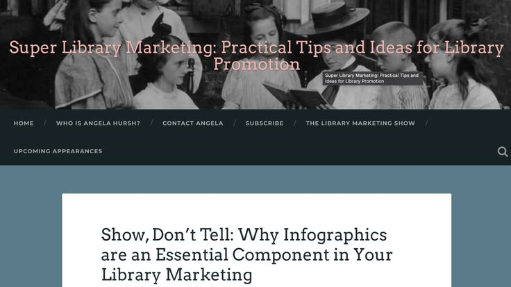
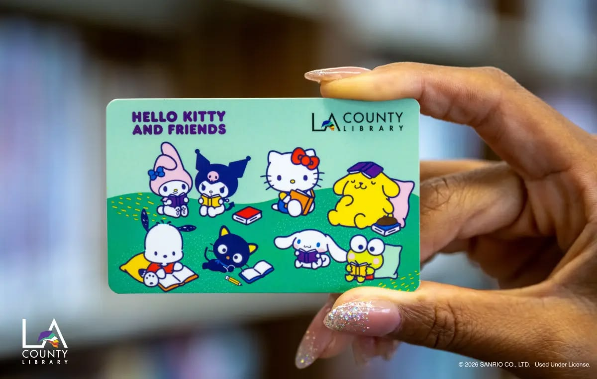
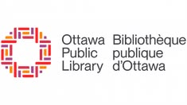
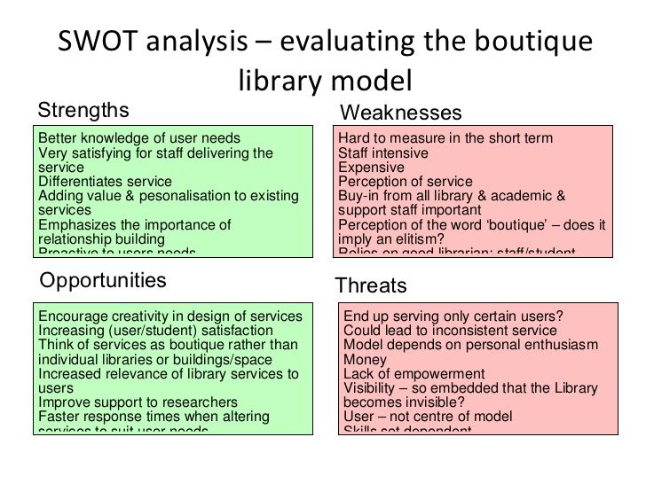
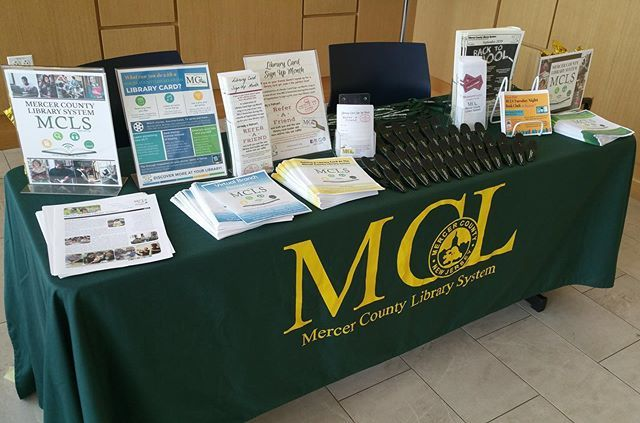
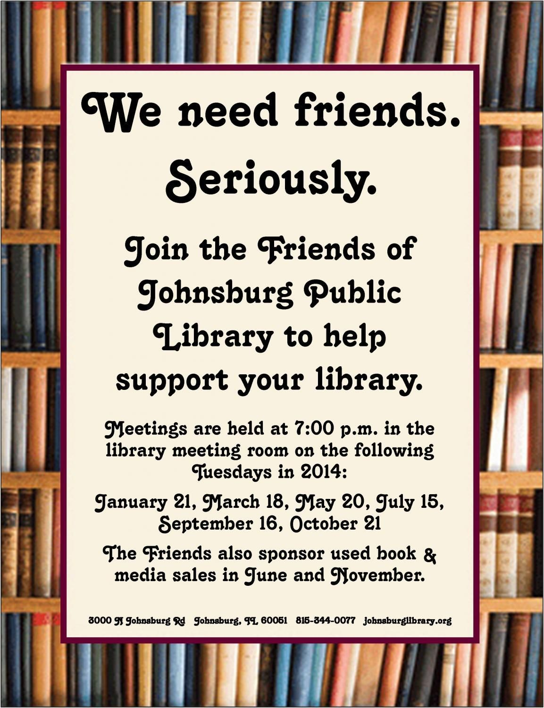
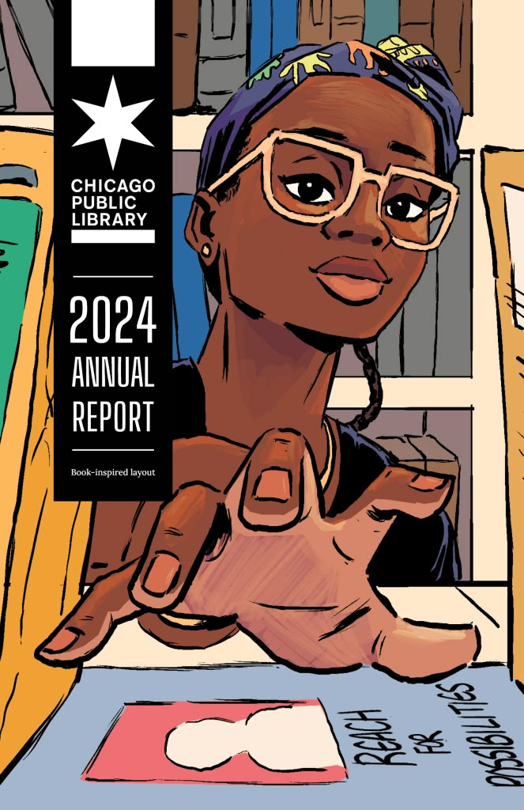
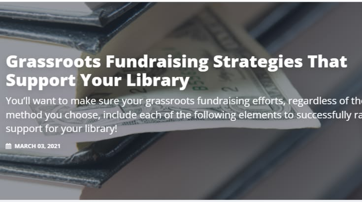
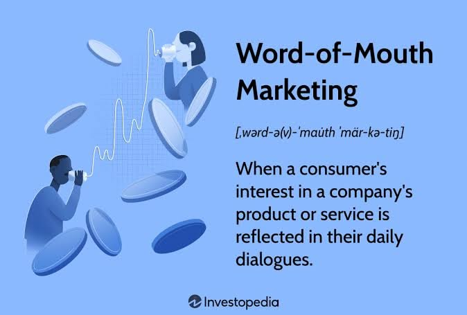
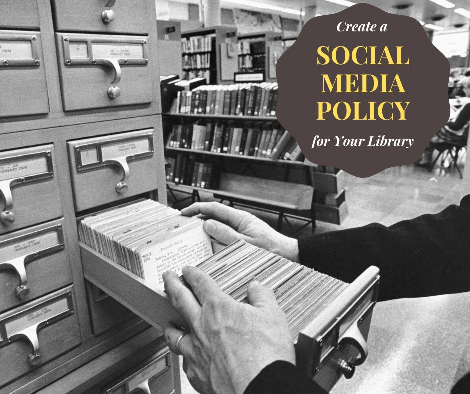

01 | COMMUNICATION
Communication Plan, Press Release & Branding

View Pinterest Pin →INFO 283 | LIBRARY MARKETING
A collection of visual research, inspiration, and ideas gathered throughout my library marketing coursework. Organized by course topic, these boards explore different approaches to communication, design, outreach, and marketing in library and information environments.
VISUAL RESEARCH & INSPIRATION
Explore selected examples and inspiration related to each topic covered throughout INFO 283.
01 | COMMUNICATION

View Pinterest Pin →02 | DESIGN

View Pinterest Pin →03 | DESIGN

View Pinterest Pin →04 | RESEARCH

View Pinterest Pin →05 | EVALUATION

View Pinterest Pin →06 | COMMUNITY

View Pinterest Pin →07 | COMMUNICATION

View Pinterest Pin →08 | DEVELOPMENT

View Pinterest Pin →09 | MARKETING

View Pinterest Pin →10 | PROFESSIONAL DEVELOPMENT
11 | DIGITAL MARKETING

View Pinterest Pin →